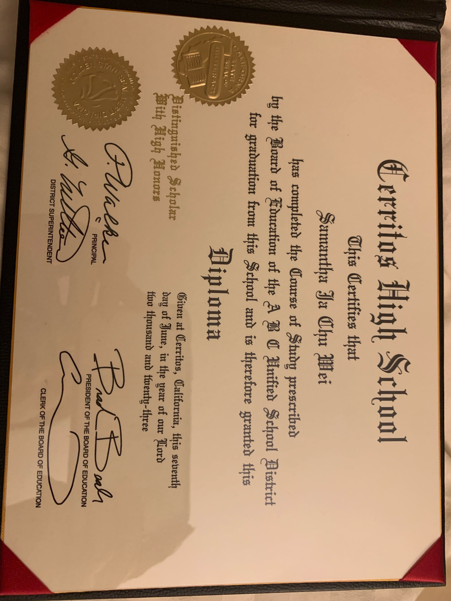
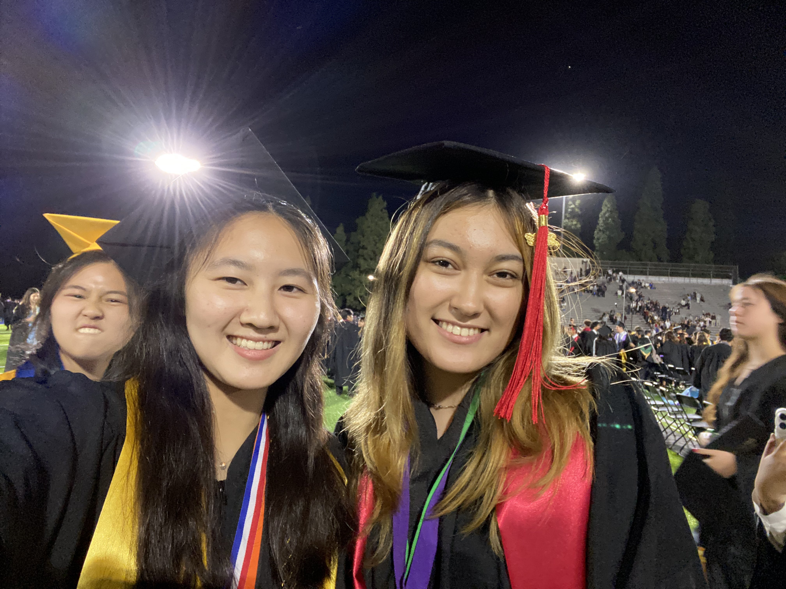
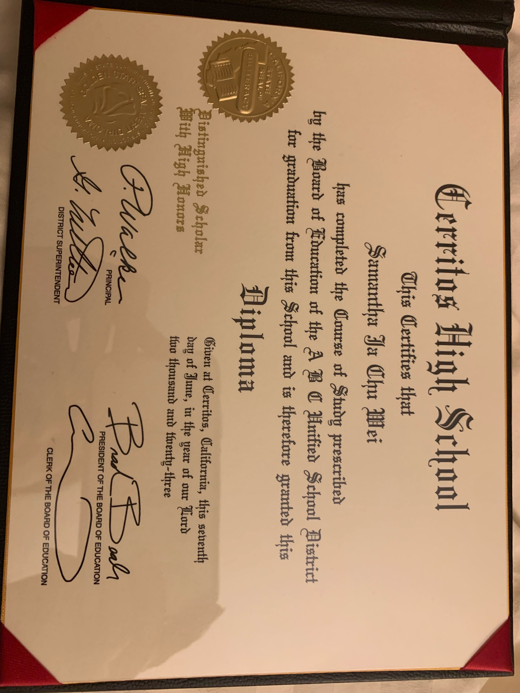
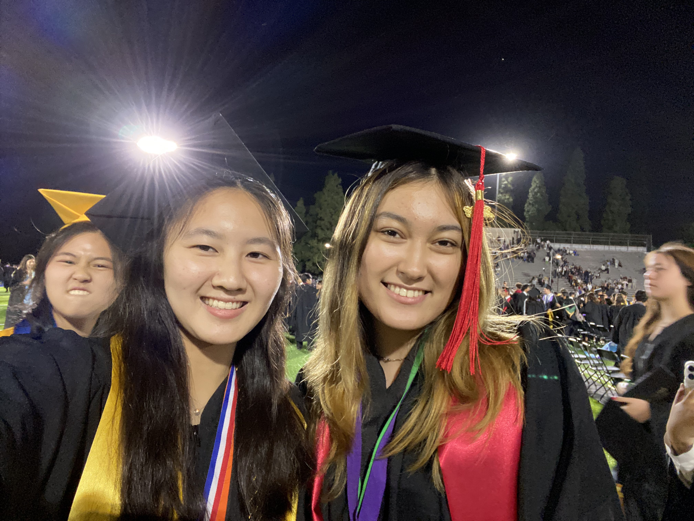
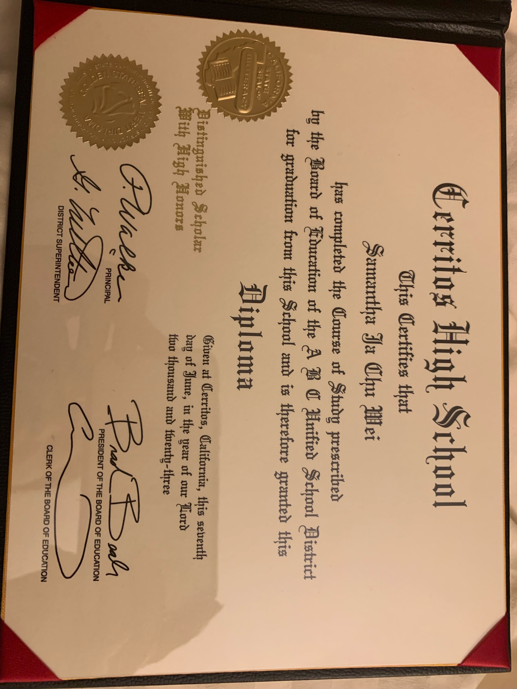
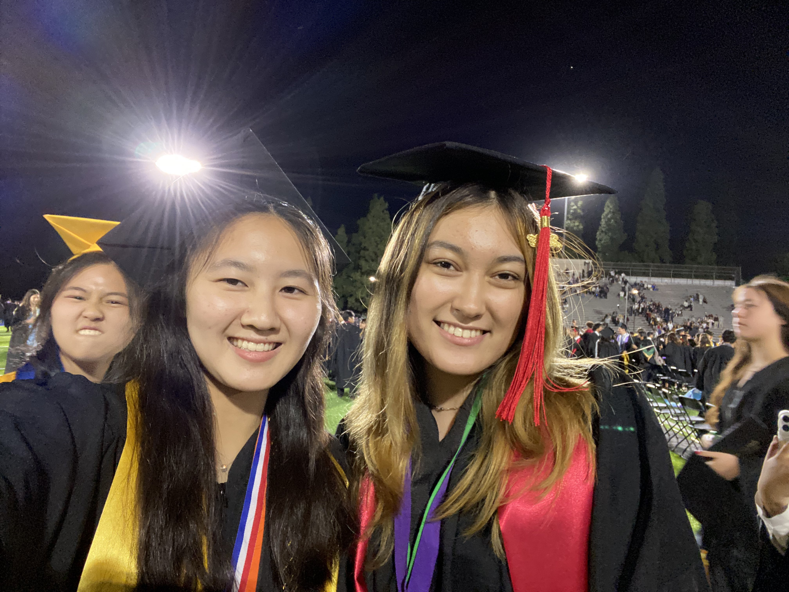

Samantha Wei
As a college student majoring in pre-business with intentions to specialize in accounting, my professional experience has been lively and enriching, considerably shaping my perspective of the corporate world. While I am still in the early phases of my academic and professional aspirations, the exposure and opportunities I have had have helped create the groundwork for my future career.One of the most important milestones in my professional development was landing an internship at a local accounting business during the summer break. This hands-on experience gave me invaluable insight into the day-to-day operations of an accounting firm. Working alongside seasoned experts allowed me to apply theoretical knowledge learned in the classroom to real-world problems.
During my internship, I worked on responsibilities such as data entry, financial statement analysis, and tax return preparation. These responsibilities not only improved my technical skills, but also taught me the value of attention to detail and precision in the world of accounting. The fast-paced nature of the work required strong time management and organizational abilities, which I recognized as necessary for success in the accounting profession. Interacting with clients and coworkers helped me have a better knowledge of the interpersonal components of my job. Effective communication, teamwork, and client relations have evolved as key aspects of the job. I prioritized building rapport with clients and being able to accurately express financial facts for subsequent development. In addition to my internship, I actively participated in extracurricular accounting and business activities. Joining accounting organizations and attending networking events allowed me to connect with industry professionals while also learning about the numerous career pathways available in accounting. These experiences not only broadened my professional network, but also introduced me to the variety of prospects accessible in the sector.
As a college student, I understand the value of constant learning and remaining current on industry trends. Attending workshops, seminars, and webinars on tax law changes and advances in accounting technology became critical to my academic and professional development. Taking a proactive approach to learning, I aimed to supplement my courses with real-world experience that would help me become a well-rounded accounting practitioner.
Looking ahead, I hope to seek additional internships and get experience in many aspects of accounting, such as auditing, forensic accounting, and management accounting. Diversifying my experiences will not only increase my skill set, but will also allow me to make more informed selections about my field of specialty.To summarize, my experience as a pre-business major with an emphasis on accounting has been characterized by hands-on learning, continuous education, and a commitment to personal and professional development. As I continue through college, I am confident that the lessons I have learned and the skills I have developed will give a solid foundation for a successful accounting career.
Experience
Food Service Worker
• Responsible for arranging over 340 meals a day
• Responded to daily phone calls from nurses regarding the patient’s diets and needs.
• Created meals that patients enjoyed while adhering to their diets and keeping them
healthy.
Teacher Assistant
• Designed reading worksheets where students can practice their comprehension by
answering questions for the text.
• Organized mini grammar lessons on the past, present, and future tense.
Tutor
• Ran sessions to help students learn how to code
• Reviewed and graded student coding projects
• Created educational content to help promote student education
• TA'd for over 400 students each academic quarter
Education
Cerritos High School
University of California Riverside
Portfolio
 




